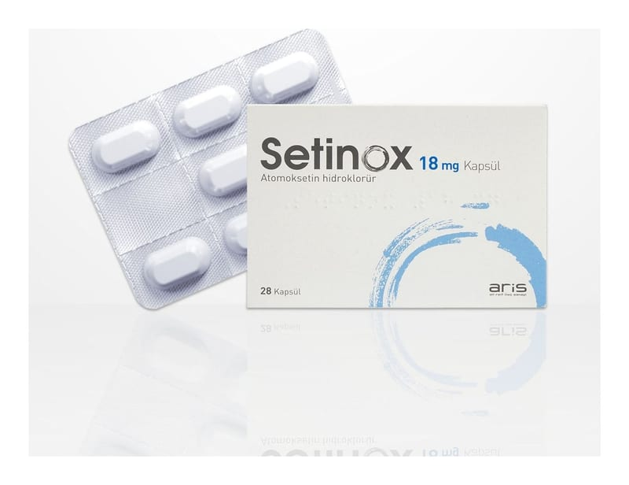

Setinox 18 mg Kapsül, 28 Adet

Ne için kullanılır
KT · Bölüm 1SETİNOX kapsüller, mavi kapaklı ve turuncu gövdeye sahip “2” büyüklüğünde sert jelatin kapsüllerin içine doldurulmuş beyaz veya hemen hemen beyaz tozdur. Her kutuda 28 kapsül olup Al/Al blister ambalajda kullanıma sunulur.
SETİNOX beyinde noradrenalin miktarını artıran atomoksetin isimli etkin maddeyi içeren bir ilaçtır ve Dikkat Eksikliği Hiperaktivite Bozukluğu (DEHB) tedavisinde 6 yaş üzerindeki çocuklar, ergenler ve yetişkinlerde kullanılır.
Danışmanlık ve davranış tedavisi gibi ilaç içermeyen başka tedavileri de gerektiren bu hastalığın daha kapsamlı tedavisinin sadece bir bölümü olarak kullanılır.
SETİNOX, 6 yaşından küçük çocuklarda işe yarayıp yaramadığı ya da güvenli olup olmadığı bilinmediğinden, bu çocuklardaki DEHB tedavisinde kullanılmamalıdır.
SETİNOX yetişkinlerde, çocuklukta yaşanan hastalığın belirtileri gibi; çok sıkıntılı, iş veya sosyal hayatı etkileyen semptomların olduğu DEHB tedavisinde kullanılır.
Noradrenalin, beyinde doğal olarak üretilen bir kimyasal olup, DEHB olan hastalarda dikkati artırır ve düşünmeden hareket etmeyi ve aşırı hareketliliği azaltır.
Bu ilaç DEHB belirtilerini kontrol etmeye yardımcı olmak için reçete edilmiştir. SETİNOX bir uyarıcı değildir ve bu nedenle bağımlılık yapmaz.
İlacı kullanmaya başladıktan sonra belirtilerinizin tamamen düzelmesi birkaç haftayı alabilir.
DEHB olan çocuklar ve ergenlerde hareketsizce oturma güçlüğü ve dikkatini toplama güçlüğü görülür. Bunları başaramamaları, hastaların kendi hataları değildir. Çocuk ve ergenler bunları yapmak için çaba gösterir ancak, DEHB olduğunda, bunlar günlük yaşamda sorunlara neden olabilir. DEHB olan çocuklar ve ergenler, öğrenme ve ev ödevlerini yapmakta güçlük çekebilir. Evde, okulda ya da başka yerlerde iyi davranmakta zorlanırlar. DEHB, çocuklar ya da ergenlerin zekasını etkilememektedir. DEHB olan yetişkinler, çocukların zor buldukları her şeyi yapmakta zorlanırlar ancak, bu durum iş, ilişkiler, düşük öz saygı ve eğitim zorlukları konularında da sorun yaşadıkları anlamına gelebilir.